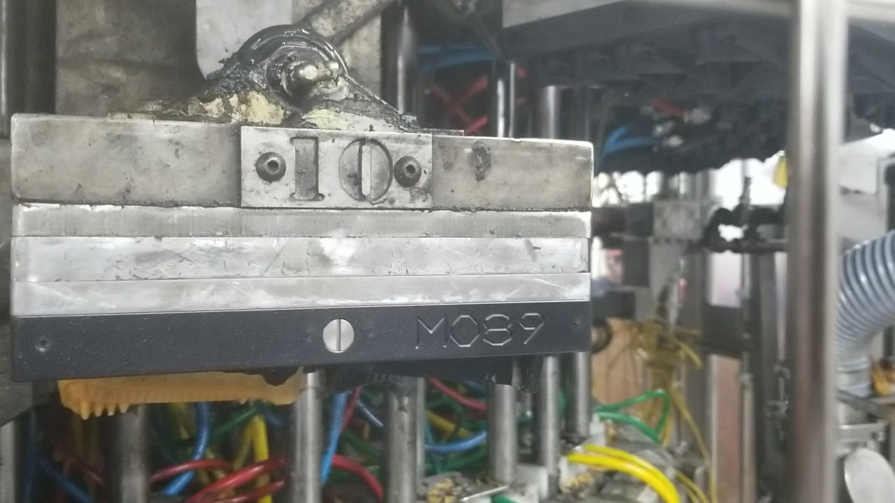
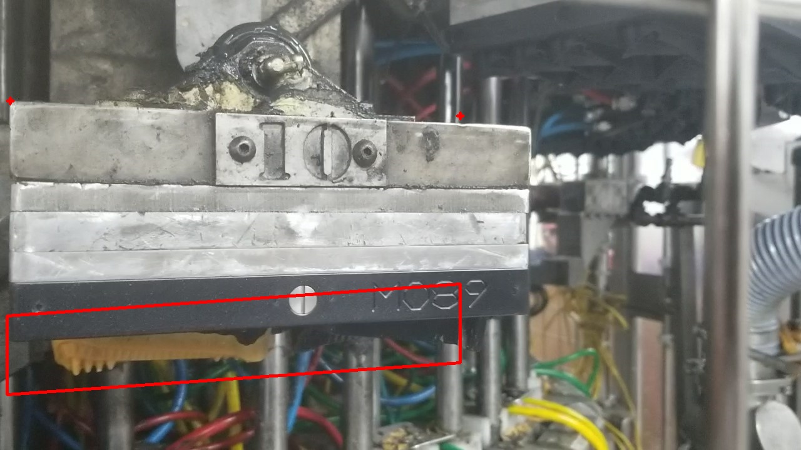
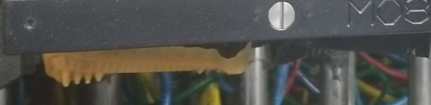
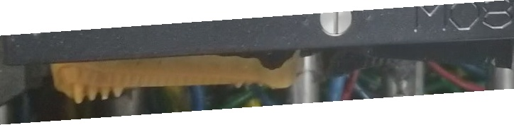

Feasibility study on BHPB still image
Purpose: Can computer vision detect bone hangups "pancakes" on the tooling ?
Test program by Rich Budek 01/12/2021
BACKGROUND
Customer's rotary compression molding machine is having hangups or "pancakes". Five years ago, a digital height gauge system was
installed to measure the height of mold set after compression. If there was excess material, then the system would detect this
by seeing a lower height. That is, the top plate would be closer to the sensor face, which was aimed down. Thus, the top plate
was up higher than during a normal run. This method required permanent brackets and wiring to accomplish this. This wiring and
brackets were removed during a machine rebuild and no longer available.
Today, the question is, "Can computer vision be used on a movie sequence, either real-time or on a file, to determine which
stations are having hangups ?". Of course, if detection is possible then data could be collected, stored, and used for a design
of experiments test. Using a computer vision system could be as easy as being a hand held mobile device or just a camera. Both
could be externally mounted quite easily.
Evaluating the motion could be done real-time while the machine is in motion, or have the motion be saved in a MPEG movie file
and processed at a later time.
This report is based on a movie recorded from a handheld Android mobile phone. The following is the output generated by a test
program running fully automatic on an image. The program attempts to determine if there is a hangup by locating the mold plate
within the frame and then looking for product left hanging in the plate. Depending on the set limit for amount of bone material,
the program determines if it is "bad" or "good".
| |
| title |
Mini Twisted Bones |
| descrip |
production run 2020 |
| data file |
Defect_01.jpg |
| size |
150 KB |
| date |
07/20/2020 |
| pixel size |
1280 x 720 |
| operator |
Rich Budek |
| search box |
|
| UL |
11 , 505 |
| LR |
735 , 580 |
ORIGINAL PICTURE
This is the original picture without any markups. It is a single frame extracted from a movie file.
Original movie was shot on handheld android phone.

WITH SEARCH WINDOW
Highlighted in red is the intended search area. We will be looking for bone material.

SEARCH WINDOW
Just the search window zoomed in.

SEARCH WINDOW CLEANED UP
If the search area is on an angle, then turn pixels to white for anything outside the box.

DEFECTS FOUND
All of the bone material found.
RESULT
Was the bone good or bad ? Picture gives the result